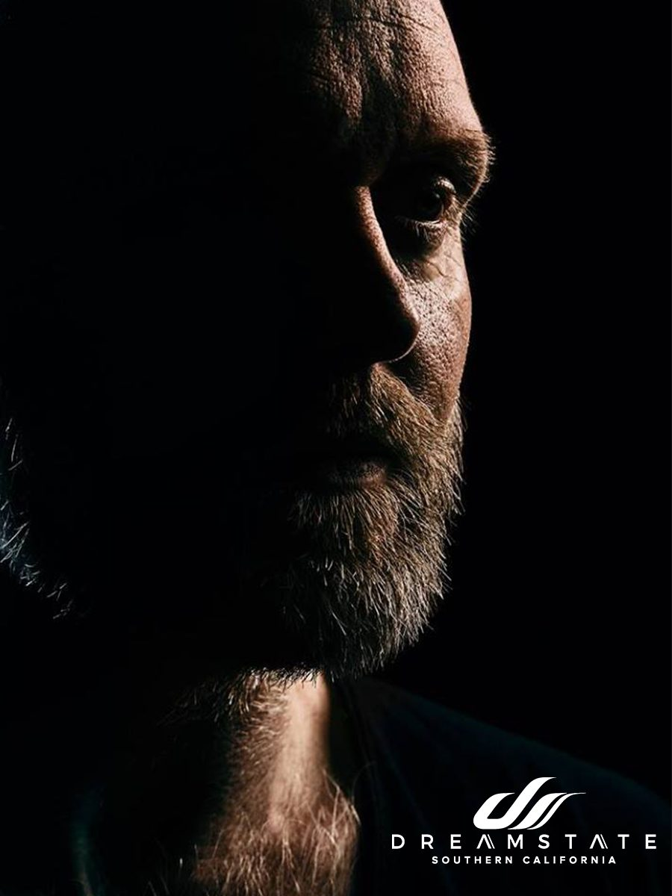

Solarstone Is Bringing Pure Trance to Dreamstate SoCal 2018


You won’t find anyone out there more committed to the defining ideals of trance than UK veteran Solarstone. Not only responsible for iconic ‘90s classics like “Seven Cities,” he’s also shown endless commitment to bringing the sound into the future. In recent years, he’s manifested this dedication by spearheading the “Pure Trance” movement.
A banner that’s home to his Pure Trance and Pure Progressive record labels, a weekly radio show, plus events and festival stages around the world, it’s also aptly described by Solarstone as a “bona fide musical movement… a passion that exists outside of contemporary musical fads and fashions. It is the bringing together of millions of fans for whom this music is a way of life.”
Fittingly, Solarstone will be representing the Pure Trance ethos next weekend at Deamstate SoCal—arguably one of the world’s defining trance parties. As the big weekend draws near, we caught up with Solarstone to find out what’s happening in the dynamic world of Pure Trance.
What has been the biggest highlight of your year so far?
There are two: First, the release of my Blue album, aka . . – – – , the release of which followed a very difficult preceding 12 months in my personal life. Getting that album out was a kind of therapy for me. The second was the launch of Silver Lining Agency, my manager and partner Paula’s booking agency (of which both Pure Trance and I are clients). Both of these highlights were borne of challenging circumstances and marked new, positive beginnings.
Name your favorite track from 2018.
Without question, it’s Orkidea’s “Forward Forever” on Pure Trance. It’s brilliant!
Which undercard trance artist do you think people should be watching out for?
Forerunners, on the progressive tip. Peter Steele, on the driving side of things. Both 100 percent understand how their chosen genre works, and their tracks always deliver on every level! I’ve been supporting both artists throughout pretty much their entire careers, and it’s very heartwarming to see both doing well.
Everyone has a DJ set that changed their life at one point. Tell us about the one set you’ve witnessed that had the biggest impact on you as a person/for your career?
As a DJ, it would be when we had our first Pure Trance event at ADE six years ago. To be staging my own event really was a big deal for me. Plus, we were celebrating trance music at a time when the scene was pretty much on its knees.
As a fan, it was the Essential Mix at Birmingham’s Que Club way back in the ‘90s, where I saw and heard Sasha in the beautiful auditorium (the Que Club used to be a chapel) and Danny Rampling in the Viper Room. The music they played was so new and fresh—Sasha playing early progressive trance and Danny playing driving Goa and euro trance records at 150 BPM. Danny played one of my tracks, too, which was bloody amazing to experience!
What boxes do you personally need to tick off in order to have a successful DJ set/live performance?
Tight mixing, a good balance of music that pleases both sexes, and—importantly—a bathroom within reach of the DJ booth.
Tell us one thing most people might not know about you yet.
In my 20s, I worked as a body piercing artist, with my own studio in Birmingham. I still wear a single piercing from those days, in my eyebrow; I removed all the others. Also, I usually make a killer risotto, although last week’s effort was a disaster—salty stock.
What do you think is your strongest skill/ability as an artist? Why do you feel it sets you apart from everyone else?
Clearly, the Pure Trance movement—it’s a scene within a scene, something special and authentic amid an industry often dictated by musical fads and fashions.
"When you’re not planning to take over the world, life is way more enjoyable."
When was the last time you were at a party for fun and not work? How important is it to you to make these types of moments happen, and how often are you able to enjoy a night out on the other side of the decks?
It rarely happens. On a night off, the place I want to be least is in a club. Peace and quiet is very prized when you make and play music for a living! I don’t even go to pubs anymore. Paula and I go to restaurants and occasionally live shows. I like to sit and see a band or an orchestra sometimes. But clubs, not often. I intended to go to the Soundgarden night at ADE, but we got the time wrong. We were about to leave, then discovered the event was ending in 10 minutes, so we went to bed instead.
What excites you most about the trance scene at the moment?
How healthy it is on a global level—there are so many great clubs, passionate promoters, young producers. It’s in really great shape. I love how trance is largely an underground scene now; it’s exciting. When you’re not planning to take over the world, life is way more enjoyable.
Are there any aspects of the trance community that you might consider to be doing more harm than good?
Not really, right now. I tend to ignore things I don’t like in the scene, and I generally don’t discuss them publicly unless I think something needs to be said. Anyone who follows me on social media knows I don’t tend to pull any punches.
How would you describe a Dreamstate event to someone who has never been before?
Exciting and bright, with brilliant sound quality and a wonderful, passionate, and loving crowd.
What would you say to anyone planning to catch your set at the festival?
Use your eyes and ears rather than your phone; they make better memories.
Dreamstate SoCal 2018 takes place Thanksgiving weekend—Friday, November 23, and Saturday, November 24—at NOS Events Center in San Bernardino, CA. Tickets are on sale now. For more information, visit the official website.
Follow Solarstone on Facebook | Twitter | SoundCloud
Follow Dreamstate on Facebook | Twitter | Instagram